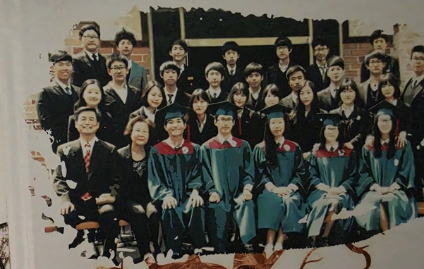
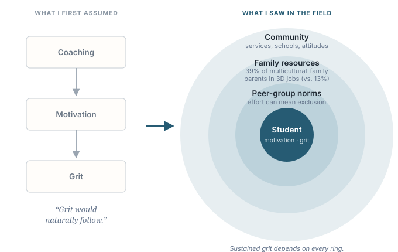
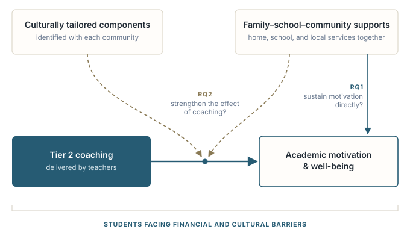
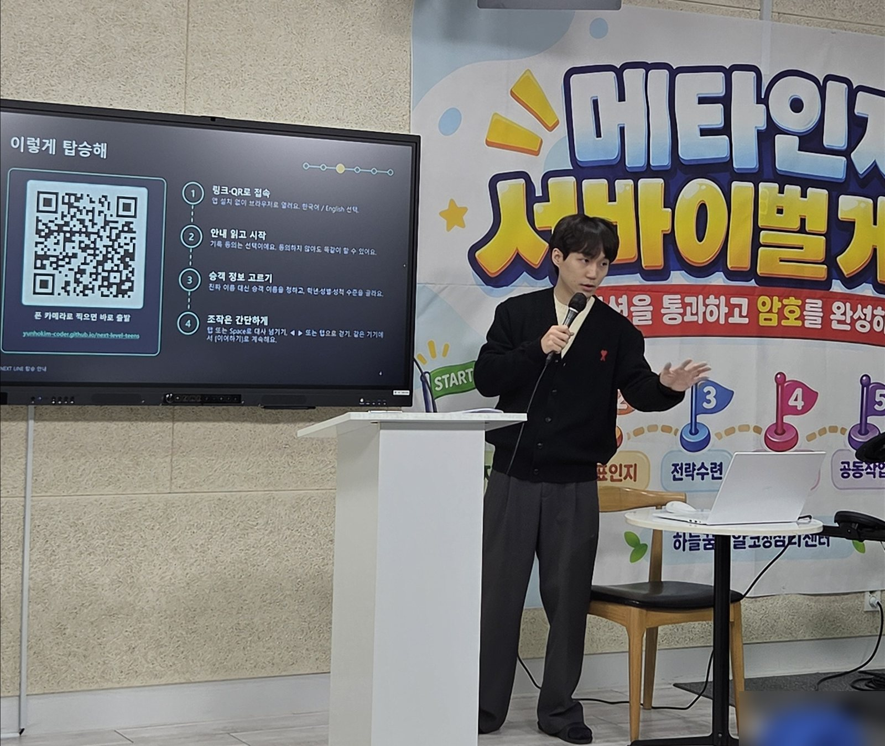

Purpose
Updated October 2026
Top-tier rankings (1st or 2nd in math, for instance) are the “report cards” of Korean students in a survey conducted across 81 countries by the OECD Program for International Student Assessment (PISA).
But all these statistics feel like hollow victories because there is also a set of statistics that paint a completely different picture: 22.3% of Korean teenagers report explicitly low life satisfaction, which is significantly worse than the OECD average of 17.9%. While South Korean youth consistently score at the top of the OECD for educational achievements and material well-being, they routinely rank at the bottom for subjective happiness. There are even more grave statistics: 27.7% of youth reported experiencing distinct symptoms of depression (Ministry of Gender Equality and Family). That is also why I developed a happiness habits scale as a small thesis project during my undergraduate studies.
In many ways, Korea isn’t exactly a fertile ground that breeds happiness. That is, life for young people is harsh at best. Performing poorly on the Korean SAT, for instance, can mark you for life, defining your future social status, literally speaking. And you get only one chance per year. Likewise, one mistake can be very costly. Meanwhile, we Koreans hear horror stories every day, such as news of cram institutes preparing students for medical school, which shocked many, especially since they target elementary school students (even kindergarteners).
As such, young people experience stress from all sides during a time when they are most sensitive, as they are undergoing drastic physical and psychological changes, often accompanied by severe anxiety. Of course, there are some, like WeClass, a counseling project for schools that was launched in 2008, but as of 2025, only 60% of schools have adopted the program. And even so, the reality today is that there is only one counselor per school, while there are hundreds, if not more, students.

Therefore, it is not an overstatement to say that we need to develop more such programs because my goal is to help struggling students, especially underachieving ones, because I was one of them. To put it simply, I could have easily been recruited for a TV program about problematic children that is very popular today in Korea. I was not an easy child to raise.
But I was lucky. I had many mentors: good teachers from a charter school and my mother, a psychologist.
Thus, I also tried to help youth recover, or better yet, develop preventive measures before their conditions worsen. This is why most of the lines on my CV are relevant: volunteering, coaching, and mentoring hundreds, if not more, of young people, including North Korean defectors and others who are struggling.
To this day, I must have counseled and carried out psychological programs for at least 200 youth (I am licensed).
However, as I work with them, I realize that the list of pressing questions keeps growing, and thus, I am now applying for a doctoral program to research the following:
Motivation in Context

First, I am interested in studying motivation and grit. In fact, this was a topic that I studied throughout my Master’s. Therefore, I felt very comfortable with the theories pertaining to it when I entered the field. However, I realized that there is a crucial element that is lacking in many of the studies in this area. That is, collectivist culture must be factored in for countries like Korea and others where others’ perception and expectation levels matter. As the focus of my research will be on underachievers, understanding the set of shared values of the particular group to which my subjects belong is the starting point. For instance, if a student hangs out mostly with underachievers, their grit and motivation to improve academically could be the very reason that they are ostracized by their group.
This goes against what we believed: Once coaching is provided to define and increase motivation, we believed grit would naturally follow.
As such, to me, grit may not be a stand-alone topic. Instead, it is essential to examine the context to provide that just-right customized solution for sustained grit, especially because my focus is on youth who face a tough environment that offers virtually no “ingredients” for success.

One such group is the immigrant group. Family, as we all know, is another critical “environment”. In the case of the multicultural-family youth, the home environment may need intervention. Many are from financially challenged households (the share of parents working in 3D jobs amounts to 39% compared to 13% in the general population), and thus they may not have the resources needed to cope with their environmental challenges.
What this told me is that community-based interventions such as peer group sessions (group dynamics) and others are needed: It doesn’t suffice to say that the youths themselves need to sustain their grit without addressing the environmental issue that exerts a significant effect on them, who are still in the making and who are still very much affected by external factors.
I have many questions regarding this issue. Given these dire external conditions, how can I ensure that these youths are motivated and exert grit when the entire world seems to be against their success? If we place the burden on the youths alone without intervening to improve their environment, this would lead to inequality.
However, grit is generally understood to strengthen self-discipline and self-control, which can help youths overcome environmental challenges and society’s negative perceptions and low expectations. Still, when efforts to improve their environments are carried out in parallel, discourse on grit will produce greater results.
Prof. Datu from Hong Kong, where a pattern similar to Korea’s exists (strong persistence in education but low happiness levels), suggests that in collectivist cultures, where individuals are highly sensitive to others’ expectations, interests, and contextual factors, “adaptability to situation” is essential. He argues that to study grit in a way that positively correlates with happiness, we need to include “adaptability to situation” as a third subfactor of grit. Upon reviewing the Korean grit scale, I found that it lacked sufficient coverage of adaptability to situations. As a result, I chose to use Prof. Datu’s scale (HKU) and designed a group coaching program that added two sessions on adaptability to situations, which, to my knowledge, earlier grit programs had not included, and grit showed a significant group-by-time improvement.
Program Design, Development & Consultation

To intervene effectively to foster grit, effective programs are urgently called for. In fact, through the Poom Family Project, carried out in collaboration with the Welfare Foundation, early intervention has proven to be crucial for proactively addressing potential maladjustment and deviant behaviors in adolescents who come from financially marginalized families and /or face educational or psychological marginalization. This is because it takes several times more time and effort to help maladjusted adolescents recover and grow after the critical period of adolescence.
To address this, I implemented psychological coaching, very much like motivational interviewing, which aims to strengthen individuals’ psychological capacity so that they can take the lead in their own growth. I also served as the project’s data analyst, analyzing pre–post outcomes and coding 46 case reports. In the 2025 cohort (46 students who completed both assessments), self-directedness increased significantly (from 3.19 to 3.46, p = .019), whereas self-efficacy did not change significantly. Gains also differed by family structure (p = .049): youth from single-parent households gained more than those from two-parent households, which suggested to me that coaching effects depend on the home context. My family’s psychological center is currently collaborating with a major satellite city’s social welfare office, the National Fund office, and the Office of Education to coach subjects who are experiencing academic anxiety, helplessness, and low motivation.

For the sessions I conducted, I utilized the curriculum, coaching tools such as role-playing, and the gamification tools I developed. If nothing else, there is nothing like a one-sided lecture to guarantee a loss of attention, while virtually everything becomes fun when gamified. But more than anything, I used these means because most of the subjects facing the above-mentioned conditions tend to hide behind silence.
And these tools were effective, and I started to witness changes. Likewise, I wish to conduct in-depth research to develop many more creative, effective coaching tools. Although the Poom Family Project worked well with families, the community, and the welfare foundation, I felt in several cases that connecting with schools would have helped more. That is part of why I want to pursue research in collaboration with schools.
Diversity & Inclusion
To increase happiness, creating an inclusive culture both in the communities and schools is essential. In the case of bi-ethnic youth, for instance, who face discrimination based on their ethnicity, they have around four times higher probability of suffering from severe depressive symptoms.
This goes for anyone considered “different” in this nation that still believes that we are one people when, in fact, a significant share of all the Korean last names were naturalized names.
Likewise, in the case of another group, the North Korean refugee youth, 20% of young defectors report experiencing bullying or harassment. Sadly, to avoid being stigmatized or ostracized, 48% of North Korean students do not reveal their identity to their classmates.
As for me, as I worked with many such youths, I heard their stories, which confirmed that these statistics are indeed correct.
This is what I wish to change. To do so, I need to learn how to convince people that diversity pays off, rather than seeing it as something to tolerate. This is also why, as an undergraduate, I worked on an experimental research paper on multicultural acceptance. It was my first attempt to study empirically how acceptance of people considered “different” can be understood, and I now want to move from understanding it to improving it. I also wish to develop a set of programs to increase inclusion. In the longer run, I would need to find ways to increase collaboration with governments, for instance, as policies are often the change drivers.
Research Questions
- How can interventions that address environmental factors, such as family and community support, help youth facing financial and cultural barriers sustain their academic motivation?
- Do family–school–community supports strengthen the effects of coaching on these youths’ motivation and well-being?

My doctoral aim is to test whether family–school–community supports and culturally tailored components, identified with each community, strengthen the effects of Tier 2 coaching on the motivation of students facing environmental barriers, when delivered by teachers.
Career Goal

In schools with few or no counselors, teachers are the adults closest to struggling students, yet many have had little training in coaching. I want to study how to equip them with a coaching mindset and practical skills, and how policy can bring such programs to more schools.
As a final note, my conviction is that people can change for the better, and I want to make sure that I play a part as a professor/scholar who continues to work with youth.